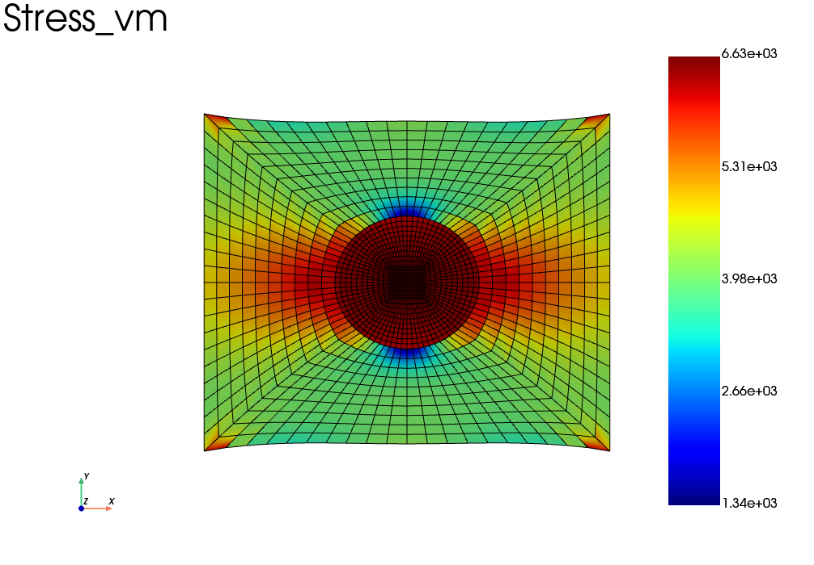

Heterogeneous structures
It is frequent that one needs to define a structure composed of several materials. The first step to define a heterogeneous material in fedoo is to get a mesh and the set of elements associated to each material.
Such a mesh could be generated for instance with microgen from the set 3mah or using the gmsh library.
As sake of example, lets build a simple heterogeneous mesh with fedoo functions: a 2D square with a round inclusion.
import fedoo as fd
import numpy as np
#Generate a mesh with a spherical inclusion inside
#matrix
mesh = fd.mesh.hole_plate_mesh(nr=11, nt=11, length=100, height=100, radius=20, \
elm_type = 'quad4', name ="Domain")
mesh.element_sets['matrix'] = np.arange(0,mesh.n_elements)
#inclusion
mesh_disk = fd.mesh.disk_mesh(20, 11, 11)
mesh_disk.element_sets['inclusion'] = np.arange(0,mesh_disk.n_elements)
#glue the inclusion to the matrix
mesh = mesh + mesh_disk
mesh.merge_nodes(np.c_[mesh.node_sets['hole_edge'], mesh.node_sets['boundary']])
Now we would like to assign different constitutive laws for the matrix and for the inclusion.
There are 3 methods to do this in fedoo.
1st method:
Most of constitutive laws accept to be given arrays of material properties instead of scalar values. The arrays of properties are interpreted depending on their dimensions as:
gauss points values
element values
node values
Of course the array shapes have to be consistend with the mesh dimensions when creating the Assembly.
fd.ModelingSpace("2Dstress")
#Define an array of young modulus for each element
E = np.empty(mesh.n_elements)
E[mesh.element_sets['matrix']] = 2e4
E[mesh.element_sets['inclusion']] = 1e5
material = fd.constitutivelaw.ElasticIsotrop(E, 0.3)
wf = fd.weakform.StressEquilibrium(material)
assembly = fd.Assembly.create(wf, mesh)
This method is propably the simpliest, but is restricted to cases where the material behavior is the same for all phases.
2nd method:
The classic way of defining heterogeneous constitutive laws is to
define several distinct assemblies and to build an AssemblySum object containing the
addition of the two assemblies.
For that purpose, the mesh need to be splited into sub-meshes containing only
the elements associated to one phase, but that point to the same nodes list.
The Mesh class propose a method dedicated to this operation:
fedoo.Mesh.extract_elements().
Then we need to define one constitutivelaw, one weakform and one assembly for
each phase before defining the global assembly with a simple addition of the
assemblies (see fedoo.Assembly.sum() for more details).
fd.ModelingSpace("2Dstress")
material1 = fd.constitutivelaw.ElasticIsotrop(2e4, 0.3)
material2 = fd.constitutivelaw.ElasticIsotrop(1e5, 0.3)
#Create the weak formulation of the mechanical equilibrium equation
wf1 = fd.weakform.StressEquilibrium(material1)
wf2 = fd.weakform.StressEquilibrium(material2)
#Create a global assembly
assemb1 = fd.Assembly.create(wf1, mesh.extract_elements('matrix'))
assemb2 = fd.Assembly.create(wf2, mesh.extract_elements('inclusion'))
assembly = assemb1 + assemb2
3rd method:
To allow for a more compact writting, and avoiding the sum of assemblies, fedoo propose
a built-in constitutive law dedicated to heterogeneous material:
fedoo.constitutivelaw.heterogeneous.Heterogeneous
This class allows to define one material as the combination of several materials associated to sets of elements. The code is shorter and more easy to read.
This methods seems to be very slightly less efficient than method 2 (to be confirmed), but the difference is barely visisble though and shouldn’t be a real matter for everyone.
fd.ModelingSpace("2Dstress")
material1 = fd.constitutivelaw.ElasticIsotrop(2e4, 0.3)
material2 = fd.constitutivelaw.ElasticIsotrop(1e5, 0.3)
material = fd.constitutivelaw.Heterogeneous((material1, material2), ('matrix', 'inclusion'))
wf = fd.weakform.StressEquilibrium(material)
assembly = fd.Assembly.create(wf, mesh)
Full example:
Here is the full script with the 3rd method and the visualization:
import fedoo as fd
import numpy as np
#Generate a mesh with a spherical inclusion inside
#matrix
mesh = fd.mesh.hole_plate_mesh(nr=11, nt=11, length=100, height=100, radius=20, \
elm_type = 'quad4', name ="Domain")
mesh.element_sets['matrix'] = np.arange(0,mesh.n_elements)
#inclusion
mesh_disk = fd.mesh.disk_mesh(20, 11, 11)
mesh_disk.element_sets['inclusion'] = np.arange(0,mesh_disk.n_elements)
#glue the inclusion to the matrix
mesh = mesh + mesh_disk
mesh.merge_nodes(np.c_[mesh.node_sets['hole_edge'], mesh.node_sets['boundary']])
#Define the Modeling Space - Here 2D problem with plane stress assumption.
fd.ModelingSpace("2Dstress")
#define the materials and build the heterogeneous Assembly
material1 = fd.constitutivelaw.ElasticIsotrop(2e4, 0.3)
material2 = fd.constitutivelaw.ElasticIsotrop(1e5, 0.3)
material = fd.constitutivelaw.Heterogeneous((material1, material2), ('matrix', 'inclusion'))
wf = fd.weakform.StressEquilibrium(material)
assembly = fd.Assembly.create(wf, mesh)
#Define a new static problem
pb = fd.problem.Linear(assembly)
#Definition of the set of nodes for boundary conditions
left = mesh.find_nodes('X',mesh.bounding_box.xmin)
right = mesh.find_nodes('X',mesh.bounding_box.xmax)
#Boundary conditions
pb.bc.add('Dirichlet', left, 'Disp', 0 )
pb.bc.add('Dirichlet', right, 'Disp', [20,0] )
pb.apply_boundary_conditions()
#Solve problem
pb.solve()
#---------- Post-Treatment ----------
res = pb.get_results(assembly, ['Stress','Strain', 'Disp'])
res.plot('Stress', component='vm')
